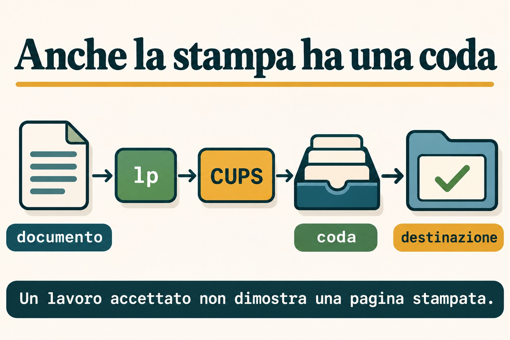
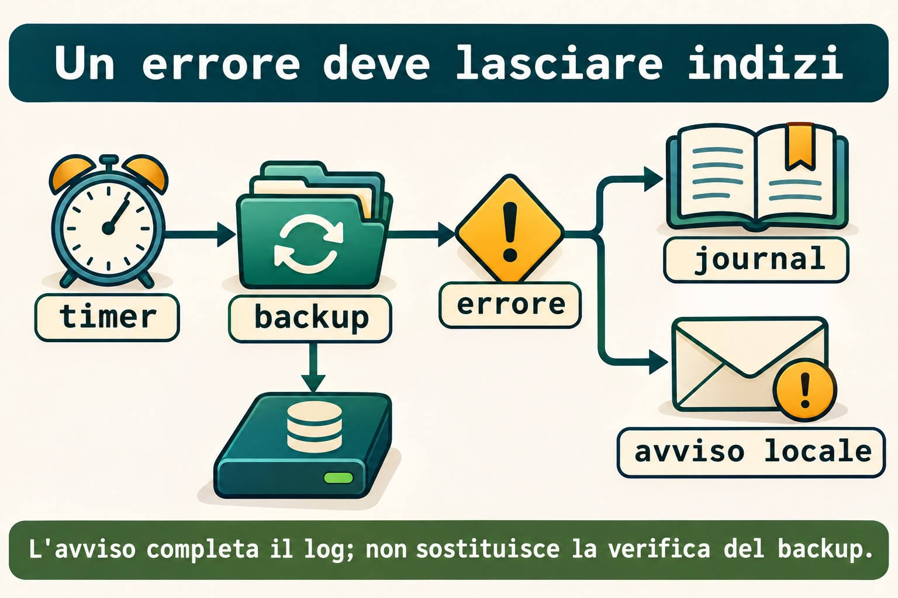

Lezione 14.5 · E-mail locale e stampa
Accettare un messaggio o un documento non dimostra la consegna. Seguirai due code locali e chiuderai il modulo con un backup che registra il risultato e avvisa quando fallisce.
Il cuore di questa lezione: verifica invio, coda e destinazione. L'avviso completa il log; il backup richiede una lettura di prova. Il resto è approfondimento.
| Scheda | |
|---|---|
| Modulo | M14 · Pianificazione, log e ora, lezione 5 di 5 |
| Quando | Settimana 20 |
| Alla fine | Verifichi la consegna locale, gestisci una coda virtuale e integri un avviso di errore |
| Prerequisiti | Lezione 14.4; VM dedicate, student, sudo e console |
| Durata | Circa 120 minuti |
| Snapshot | m14a5-inicio e m14a5-fim sulle VM 201 e 202 |
1 · Riscaldamento
- Quale evidenza dimostra un'esecuzione del timer, oltre al fatto che sia attivo?
- Come consulti un errore per unità e boot nel journal?
- Perché il fuso deve accompagnare l'ora di un'evidenza?
2 · Perché conta
Un programma può accettare l'invio e il destinatario restare senza messaggio. Separa invio, coda, trasporto e casella. Anche nella stampa ricevere il lavoro precede il completamento a destinazione.
Qui tutto rimane sulla stessa VM: posta locale e coda virtuale che scarta i byte. Non usare indirizzi esterni o dispositivi fisici. L'obiettivo è comprendere le evidenze senza creare un server pubblico.
3 · Modello mentale

sendmail è l'interfaccia compatibile di invio fornita qui da Postfix. Il nome non significa che sia installato il server Sendmail. La consegna locale termina nella casella di un utente della VM.


CUPS riceve, mantiene la coda e attiva la destinazione. In questo laboratorio file:///dev/null scarta i dati. Completare in questa destinazione non dimostra un foglio stampato.
4 · L'essenziale
| Strumento | Domanda |
|---|---|
postconf -n | Quale configurazione esplicita è salvata? |
postqueue -p | Che cosa è ancora in coda? |
newaliases | Il database degli alias è stato ricostruito? |
lpstat -t | Quali code e stati esistono? |
lp e cancel | Come invio e annullo il mio lavoro? |
Un alias reindirizza il nome locale senza creare account o casella. Una coda e-mail vuota può rappresentare consegna oppure errore già elaborato. Leggi anche casella e log.
Decidi 1
L'invio ha restituito successo, ma non hai letto l'avviso. Tu: A) dichiari la consegna; B) controlli coda, log e casella; C) cambi server dell'ora.
5 · Lab guidato
Ripeti sulle VM 201 e 202 come student, con /home/student. Ogni prerequisito è un punto di arresto; se fallisce, non proseguire. L'esercizio richiede VM dedicate, senza MTA configurato, senza code esistenti e senza personalizzazioni di CUPS.
Sul nodo Proxmox:
qm snapshot 201 m14a5-inicio
qm snapshot 202 m14a5-inicioPasso 1 · Riservare i nomi e installare
Ipotesi: un pacchetto può avviare il servizio durante l'installazione?
Sì. Registra gli stati prima di mascherare temporaneamente le unità. Se un MTA è configurato oppure un'unità è già mascherata, fermati e usa un'altra VM predisposta.
id
getent passwd student
systemctl is-active postfix cups
systemctl is-enabled postfix cups cups.socket cups.path
ss -lnt '( sport = :25 or sport = :631 )'
test ! -e "$HOME/m14a5"
test ! -e /usr/local/libexec/m14a5-backup
test ! -e /usr/local/libexec/m14a5-alert
test ! -e /etc/systemd/system/m14a5-backup.service
test ! -e /etc/systemd/system/m14a5-alert.service
test ! -e /etc/systemd/system/m14a5-backup.timer
test ! -e /var/lib/m14a5
mkdir -m 700 "$HOME/m14a5"
systemctl list-unit-files 'postfix*' 'cups*' > "$HOME/m14a5/services.before"
sudo systemctl mask postfix.service cups.service cups.socket cups.pathSu Rocky:
sudo dnf install -y postfix s-nail cups cups-client cups-filtersSu Debian riserva la politica d'installazione temporanea seguente; se esiste già, fermati senza sostituirla. Impedisce l'avvio tramite gli script d'installazione, anche delle dipendenze. Risolvi eventuali errori d'installazione prima di rimuovere la politica creata qui.
test ! -e /usr/sbin/policy-rc.d
printf '#!/bin/sh\nexit 101\n' | sudo tee /usr/sbin/policy-rc.d >/dev/null
sudo chmod 755 /usr/sbin/policy-rc.d
printf 'postfix postfix/main_mailer_type select Local only\n' | sudo debconf-set-selections
sudo apt-get update
sudo apt-get install -y postfix bsd-mailx cups cups-client cups-filters
sudo rm -- /usr/sbin/policy-rc.dOutput atteso: strumenti installati e servizi riservati ancora fermi. Le dipendenze variano secondo la distribuzione.
Verifica: ricontrolla porte e stati. Se compare un listener di rete oppure un MTA precedente, fermati prima di configurare.
Passo 2 · Definire l'ambito locale
Ipotesi: limitare il listener impedisce anche l'uscita verso destinazioni esterne?
No. Limita ricezione e trasporti in uscita. Questa configurazione sostituisce soltanto lo stato standard appena installato sulla VM dedicata. Non applicarla a un server esistente.
sudo cp -a /etc/postfix/main.cf "$HOME/m14a5/main.cf.before"
sudo postconf -e 'inet_interfaces = loopback-only'
sudo postconf -e 'inet_protocols = ipv4'
sudo postconf -e "myhostname = $(hostname -s).invalid"
sudo postconf -e 'myorigin = $myhostname'
sudo postconf -e 'mydestination = $myhostname, localhost.$mydomain, localhost'
sudo postconf -e 'mynetworks = 127.0.0.0/8'
sudo postconf -e 'relay_domains ='
sudo postconf -e 'smtpd_relay_restrictions = reject_unauth_destination'
sudo postconf -e 'default_transport = error:local delivery only'
sudo postconf -e 'relay_transport = error:local delivery only'
sudo postconf -e 'alias_maps = hash:/etc/aliases'
sudo postconf -e 'alias_database = hash:/etc/aliases'
sudo postfix check
sudo postconf -n
sudo systemctl unmask postfix.service
sudo systemctl enable --now postfix.service
ss -lnt '( sport = :25 )'
sudo postfix statusOutput atteso: SMTP soltanto su 127.0.0.1:25. Le destinazioni non locali incontrano il trasporto di errore. Non provare indirizzi esterni.
Verifica: listener, processi e configurazione reale. La struttura delle unità Postfix può variare fra distribuzioni; lo stato attivo non sostituisce questi controlli.
Passo 3 · Seguire la consegna locale
Ipotesi: modificare gli alias aggiorna immediatamente la mappa indicizzata?
Riserva m14notice: le prime due ricerche devono mostrarne l'assenza. Se esiste già, fermati prima di aggiungere il blocco.
sudo grep -n '^m14notice:' /etc/aliases
sudo postalias -q m14notice hash:/etc/aliases
printf '\n# BEGIN m14a5\nm14notice: student\n# END m14a5\n' | sudo tee -a /etc/aliases >/dev/null
sudo newaliases
sudo postalias -q m14notice hash:/etc/aliases
printf 'To: m14notice\nSubject: m14a5-local\n\nm14a5 delivery check\n' | /usr/sbin/sendmail -i m14notice
sudo postqueue -p
SPOOL=$(sudo postconf -h mail_spool_directory)
MAILBOX="$SPOOL/student"
printf '%s\n' "$MAILBOX"
sudo journalctl --since '-5 minutes' --no-pager | grep -E 'postfix|m14a5'
mail -f "$MAILBOX"Nel lettore h elenca le intestazioni, il numero seleziona il messaggio e x esce senza salvare modifiche alla casella. Leggi soltanto l'oggetto del laboratorio; non cancellare altri messaggi.
Output atteso: la ricerca dell'alias restituisce student e il messaggio arriva alla casella. La coda può svuotarsi rapidamente; identificatori e orari provengono dall'esecuzione reale.
Verifica: corpo e log della consegna tramite l'identificatore. Se il journal non riceve i log dell'MTA, controlla rsyslog e le sue destinazioni di posta esistenti, senza inventare un percorso universale.
Passo 4 · Creare una stampante virtuale
Ipotesi: una coda può terminare senza produrre carta?
Sì. La nostra destinazione è un file speciale che scarta i byte. CUPS 2.x richiede un PPD per un dispositivo su file: non creare una coda senza driver con -m raw. Seleziona un modello PostScript realmente elencato. PPD è un meccanismo storico; con dispositivi moderni normalmente si usa IPP senza driver.
sudo systemctl unmask cups.service cups.socket cups.path
sudo systemctl start cups.service
sudo cupsctl --no-remote-admin --no-remote-any --no-share-printers
sudo cupsd -t
ss -lnt '( sport = :631 )'
lpstat -p
LC_ALL=C lpinfo -m | grep -i 'generic.*postscript'
read -r -p 'MODEL: ' MODEL
lpinfo -m | awk '{print $1}' | grep -Fx -- "$MODEL"
sudo lpadmin -p m14file -E -v file:///dev/null -m "$MODEL" -o printer-is-shared=false
lpstat -v m14file
lpstat -p m14fileCopia soltanto la prima colonna del modello selezionato. Se manca un modello oppure la verifica fallisce, fermati senza inventare un driver. Se m14file esiste già, fermati prima di crearlo. Non proseguire con un listener su 0.0.0.0:631 oppure [::]:631: correggi prima la configurazione locale dedicata.
Output atteso: coda dedicata con PPD e destinazione file:///dev/null. Questa destinazione speciale è consentita senza abilitare scritture arbitrarie su file.
Verifica: listener soltanto su loopback o socket locale e nessuna stampante fisica selezionata.
Passo 5 · Trattenere, rilasciare e completare
Ipotesi: la ricevuta del client indica accettazione oppure completamento?
printf 'm14a5 virtual document\n' > "$HOME/m14a5/document.txt"
lp -d m14file -o raw -H hold "$HOME/m14a5/document.txt"
lpstat -W not-completed -o m14file
read -r -p 'JOB_ID: ' JOB_ID
lp -i "$JOB_ID" -H resume
lpstat -W completed -o m14fileCopia l'identificatore della tua ricevuta, compreso il nome della coda. -o raw in questo invio evita i filtri; la coda continua ad avere un PPD. Attendi il completamento e ripeti la ricerca se necessario.
Output atteso: inizialmente trattenuto, poi completato nella cronologia disponibile. La destinazione scarta i dati senza attivare dispositivi.
Verifica: crea un altro lavoro trattenuto, registra il nuovo identificatore e annulla soltanto quel lavoro con cancel "$JOB_ID". Non riutilizzare l'identificatore precedente e non annullare code intere.
Passo 6 · Verificare dopo il reboot
Ipotesi: alias e coda dipendono dal mantenimento della tua sessione aperta?
sudo systemctl enable postfix.service cups.service
sudo postfix check
sudo cupsd -t
sudo systemctl rebootRiconnettiti tramite il percorso già verificato. Reinvia il messaggio locale del Passo 3 con un nuovo oggetto e controlla la casella senza confondere un vecchio messaggio con la consegna dopo il boot.
ss -lnt '( sport = :25 or sport = :631 )'
sudo postqueue -p
lpstat -t
sudo journalctl -b -u cups.service --no-pagerOutput atteso: servizi locali disponibili, nuova consegna e coda conservata, senza esposizione di rete.
Verifica: registra le tre evidenze; il solo stato attivo non le sostituisce.
6 · Rompi e ripara
Guasto 1 · File nuovo, mappa vecchia
Sintomo: il file contiene l'alias, ma la ricerca non lo trova.
Indagine: riserva un alias assente e aggiungi soltanto il blocco temporaneo, senza ricostruire. Se esiste già, fermati.
sudo grep -n '^m14stale:' /etc/aliases
sudo postalias -q m14stale hash:/etc/aliases
printf '\n# BEGIN m14stale\nm14stale: student\n# END m14stale\n' | sudo tee -a /etc/aliases >/dev/null
sudo grep '^m14stale:' /etc/aliases
sudo postalias -q m14stale hash:/etc/aliasesCausa: la mappa indicizzata rappresenta la versione precedente.
Riparazione: esegui sudo newaliases e ripeti la ricerca.
Verifica: restituisce student; rimuovi soltanto il blocco temporaneo e ricostruisci di nuovo.
sudo sed -i '/^# BEGIN m14stale$/,/^# END m14stale$/d' /etc/aliases
sudo newaliasesPrevenzione: controlla separatamente file, mappa e consegna.
Guasto 2 · Coda disabilitata
Sintomo: il documento è stato accettato, ma non termina.
Indagine: disabilita soltanto la coda dedicata e invia una prova.
sudo cupsdisable m14file
lp -d m14file -o raw "$HOME/m14a5/document.txt"
lpstat -p m14file
lpstat -o m14fileCausa: accettare lavori ed elaborarli sono stati diversi.
Riparazione: esegui sudo cupsenable m14file.
Verifica: il tuo lavoro termina nella destinazione virtuale; altrimenti leggi il log di CUPS.
Prevenzione: controlla coda e lavoro prima di riavviare l'intero servizio.
Guasto 3 · Destinazione inesistente
Sintomo: manca una ricevuta con identificatore del lavoro.
Indagine: verifica che il nome seguente non esista prima della prova.
lpstat -p
lp -d m14naoexiste "$HOME/m14a5/document.txt"
printf 'rc=%s\n' "$?"Causa: il client non ha trovato la coda; l'errore precede la stampa.
Riparazione: seleziona esplicitamente m14file.
Verifica: l'invio corretto riceve un identificatore e appare nella cronologia.
Prevenzione: gli script non devono dipendere da una stampante predefinita sconosciuta.
7 · Trappole
- Un listener locale non impedisce da solo la consegna esterna.
- Una coda vuota non sostituisce la lettura della casella.
- Non inviare segreti nel corpo di un avviso.
- L'avviso sulla stessa VM dipende dal suo funzionamento; il monitoraggio esterno è un altro progetto.
- Non esporre l'amministrazione di CUPS per facilitare l'esercizio.
Decidi 2
Il backup fallisce e l'avviso dipende dallo stesso server. Concludi: A) artefatto, log e avviso richiedono controlli propri.; B) l'assenza di avvisi dimostra il successo; C) l'avviso sostituisce la verifica
8 · Quiz
- Che cosa dimostra l'accettazione da parte di
sendmail? - Un alias crea account e casella?
- Perché eseguire
newaliases? - Una coda disabilitata può accettare lavori?
- Che cosa è stato completato nella destinazione virtuale?
- L'assenza di e-mail dimostra il successo del backup?
9 · Promemoria
Flashcard: invio → ingresso; coda → attesa; alias → reindirizzamento; casella → contenuto consegnato; CUPS → coda e destinazione; avviso → indizio aggiuntivo.
submission -> queue -> local delivery -> mailbox
lp -> queue -> destination -> result10 · Checklist e chiusura
Sfida del modulo · Backup, log e avviso


Ultimo esercizio: realizza l'integrazione senza file reali. Il timer giornaliero richiama un backup di prova; il suo fallimento deve produrre stato di errore, log e avviso locale. I nomi e i testi della macchina rimangono uguali nelle due lingue.
mkdir -m 700 "$HOME/m14a5/source"
printf 'm14a5 backup data\n' > "$HOME/m14a5/source/data.txt"
sudo install -d -m 755 /usr/local/libexec
sudo tee /usr/local/libexec/m14a5-backup >/dev/null <<'EOF'
#!/bin/sh
set -eu
if [ -e /var/lib/m14a5/fail ]; then
echo 'm14a5 controlled failure' >&2
exit 9
fi
tmp=$(mktemp /var/lib/m14a5/backup.XXXXXX)
trap 'rm -f -- "$tmp"' EXIT HUP INT TERM
tar -czf "$tmp" -C /home/student/m14a5 source
tar -tzf "$tmp" >/dev/null
mv -- "$tmp" /var/lib/m14a5/backup.tar.gz
echo 'm14a5 backup verified'
EOF
sudo tee /usr/local/libexec/m14a5-alert >/dev/null <<'EOF'
#!/bin/sh
set -eu
printf 'To: m14notice\nSubject: m14a5-backup-failed\n\nCheck journal: m14a5-backup.service\n' | /usr/sbin/sendmail -i m14notice
EOF
sudo chmod 755 /usr/local/libexec/m14a5-backup /usr/local/libexec/m14a5-alertSu Rocky: sudo restorecon /usr/local/libexec/m14a5-backup /usr/local/libexec/m14a5-alert. I nomi delle unità e dello stato sono già stati riservati nel Passo 1. Se qualcuno li ha creati nel frattempo, fermati prima di scrivere.
sudo tee /etc/systemd/system/m14a5-backup.service >/dev/null <<'EOF'
[Unit]
Description=M14 local backup
OnFailure=m14a5-alert.service
[Service]
Type=oneshot
User=student
Group=student
StateDirectory=m14a5
StateDirectoryMode=0700
ExecStart=/usr/local/libexec/m14a5-backup
EOF
sudo tee /etc/systemd/system/m14a5-alert.service >/dev/null <<'EOF'
[Unit]
Description=M14 local failure notice
[Service]
Type=oneshot
User=student
Group=student
ExecStart=/usr/local/libexec/m14a5-alert
EOF
sudo tee /etc/systemd/system/m14a5-backup.timer >/dev/null <<'EOF'
[Unit]
Description=M14 daily backup
[Timer]
OnCalendar=daily
Persistent=true
Unit=m14a5-backup.service
[Install]
WantedBy=timers.target
EOF
sudo systemd-analyze verify /etc/systemd/system/m14a5-backup.service /etc/systemd/system/m14a5-alert.service /etc/systemd/system/m14a5-backup.timer
sudo systemctl daemon-reload
sudo systemctl start m14a5-backup.service
tar -tzf /var/lib/m14a5/backup.tar.gz
sudo systemctl enable --now m14a5-backup.timer
systemctl list-timers m14a5-backup.timerIl file temporaneo sostituisce il backup finale soltanto dopo aver superato la lettura. Questo convalida il file di prova senza sostituire una prova completa di ripristino. Provoca l'errore controllato e osserva il fallimento atteso.
touch /var/lib/m14a5/fail
sudo systemctl start m14a5-backup.service
sudo journalctl -u m14a5-backup.service -u m14a5-alert.service --since '-5 minutes' --no-pager
sudo postqueue -p
rm -- /var/lib/m14a5/fail
sudo systemctl reset-failed m14a5-backup.service
sudo systemctl start m14a5-backup.service
systemctl show m14a5-backup.service -p Result -p ExecMainStatusLeggi l'avviso nella casella come nel Passo 3. L'accettazione del programma d'invio non basta. Dopo aver rimosso l'errore, verifica una nuova lettura del backup e il risultato di successo.
Reboot di verifica: riavvia e controlla timer, listener e ultimo risultato. La persistenza recupera un'attivazione scaduta, non un'esecuzione per ogni giorno perso. Non regolare l'orologio per la prova.
Pulizia e stato finale
Copia il backup di prova e rimuovi soltanto pianificazione e coda dedicate. Postfix locale e CUPS locale rimangono installati. Il journal persistente della 14.3 e chrony della 14.4 rimangono. Non ripristinare alla cieca configurazioni precedenti che potrebbero riaprire i listener.
sudo systemctl disable --now m14a5-backup.timer
sudo systemctl stop m14a5-backup.service m14a5-alert.service
if cp -- /var/lib/m14a5/backup.tar.gz "$HOME/m14a5/backup.tar.gz" &&
cmp -- /var/lib/m14a5/backup.tar.gz "$HOME/m14a5/backup.tar.gz"; then
sudo systemctl clean --what=state m14a5-backup.service m14a5-backup.timer
sudo systemctl reset-failed m14a5-backup.service m14a5-alert.service
sudo rm -- /etc/systemd/system/m14a5-backup.service /etc/systemd/system/m14a5-alert.service /etc/systemd/system/m14a5-backup.timer
sudo rm -- /usr/local/libexec/m14a5-backup /usr/local/libexec/m14a5-alert
sudo systemctl daemon-reload
lpstat -o m14file
sudo lpadmin -x m14file
sudo sed -i '/^# BEGIN m14a5$/,/^# END m14a5$/d' /etc/aliases
sudo newaliases
sudo postfix check
sudo cupsd -t
else
printf 'Backup copy failed; state and configuration preserved.\n' >&2
fiPrima di rimuovere la coda, verifica che tutti i suoi lavori siano tuoi: la rimozione annulla quei lavori. Se la copia o il confronto fallisce la pulizia non prosegue: correggi l'errore e ripeti prima dello snapshot finale. Conserva caselle, code di posta e log. La tua cartella mantiene documenti, backup ed evidenze per la revisione.
- [ ] Invio, coda e casella verificati sulle due VM.
- [ ] Listener soltanto locali e nessuna stampante fisica attivata.
- [ ] L'errore ha prodotto log e avviso; il recupero ha superato la lettura.
- [ ] La pulizia ha conservato lavori, caselle e log altrui.
Sul nodo, dopo la pulizia:
qm snapshot 201 m14a5-fim
qm snapshot 202 m14a5-fim11 · Nella vita reale
Leggi configurazioni e code esistenti con autorizzazione. Un server reale può avere relay autenticato, regole e destinazioni esterne legittime. Il profilo isolato della lezione non deve sostituirli.
Ponte Windows
Anche un lavoro bloccato nello spooler richiede di controllare coda, destinazione e risultato. La sequenza delle evidenze si trasferisce; i comandi di questa lezione sono Linux.
Rocky × Debian
Pacchetti, struttura delle unità e directory della casella variano. Leggi il sistema reale e non trasformare differenze di pacchettizzazione in sostituzioni cieche della configurazione.
12 · Approfondire quando vuoi
- Parametri di Postfix: listener, destinazioni e trasporti.
- Aliases e sendmail: mappa e invio su Debian.
- CUPS: lpadmin, lp e dispositivi su file: coda, invio e limitazioni.
- RHEL 9: CUPS: modelli e amministrazione.
- systemd.unit e systemd.timer: errori e persistenza.
DeepTutor
!explica submissao, fila e entrega local com um exemplo
!feynman por que um trabalho aceito ainda pode falhar
!quiz timer, backup, journal e aviso localSoluzioni commentate
Riscaldamento e decisioni
- Risultato dell'unità, istante ed evidenza prodotta.
- Filtra per unità e intervallo o boot pertinente.
- La visualizzazione dipende dal fuso; l'istante può essere lo stesso.
Decidi 1: B; l'accettazione non dimostra la consegna nella casella.
Decidi 2: A; anche il meccanismo di avviso può fallire.
Quiz
- Accettazione dell'invio, non consegna né lettura.
- No; reindirizza un nome.
- Per ricostruire la mappa indicizzata configurata.
- Sì; accettazione ed elaborazione sono stati separati.
- I byte sono stati scartati, senza prova di carta.
- No; controlla artefatto leggibile, risultato, log e consegna dell'avviso.
← Lezione 14.4 · L'ora corretta · Indice delle lezioni · Piano del corso: dalla 15.1 in poi →